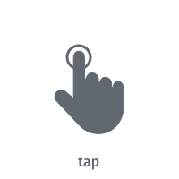
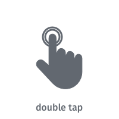
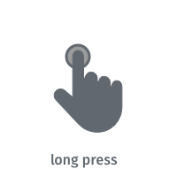
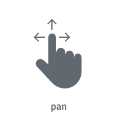
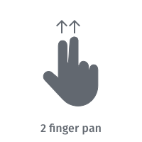
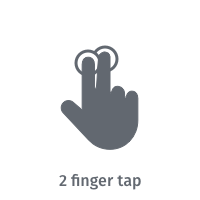
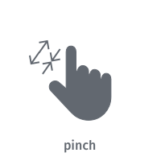

Interact with the map
By default, a HERE SDK map view supports all common map gestures, such as pinch and double-tap to zoom in. The table below summarizes the available gestures and their corresponding default behaviors on the map.
|  | Tap the screen with one finger. This gesture does not have a predefined map action. |
|  | To zoom the map in by a fixed amount, tap the screen twice with one finger. |
|  | Press and hold one finger to the screen. This gesture does not have a predefined map action. |
|  | To move the map, press and hold one finger to the screen, and move it in any direction. The map will keep moving with a little momentum after the finger was lifted. |
|  | To tilt the map, press and hold two fingers to the screen, and move them vertically. No behavior is predefined for other directions. |
|  | To zoom out by a fixed amount, tap the screen with two fingers. |
|  | To zoom in or out continuously, press and hold two fingers to the screen, and increase or decrease the distance between them. To rotate the map continuously, press and hold two fingers to the screen, and change the angle between them either by rotating them both or by moving one of them. |
The HERE SDK for Flutter provides support for the following gestures:
- Tap:
TapListener - Double Tap:
DoubleTapListener - Long Press:
LongPressListener - Pan:
PanListener - Two Finger Pan:
TwoFingerPanListener - Two Finger Tap:
TwoFingerTapListener - Pinch Rotate:
PinchRotateListener
Each listener provides a dedicated callback that informs you whenever the user performs an action that could be detected, for example, the beginning or the end of that specific gesture. Usually, you will want to add a specific behavior to your application after a gesture was detected, like placing a map marker after a long press.
Note that only one listener can be set at a time for the same gesture.
Attach a gesture listener
Let's see an example of how a gesture listener can be attached to the map view. The map view provides specific setters for each gesture. As soon as you set a listener, it will receive all related events for that gesture via the dedicated callback, which is onTap() in case of a TapListener:
void _setTapGestureHandler() {
_hereMapController.gestures.tapListener = TapListener((Point2D touchPoint) {
var geoCoordinates = _toString(_hereMapController.viewToGeoCoordinates(touchPoint));
print('Tap at: $geoCoordinates');
});
}
String _toString(GeoCoordinates? geoCoordinates) {
if (geoCoordinates == null) {
// This can happen, when there is no map view touched, for example, when the screen was tilted and
// the touch point is on the horizon.
return "Error: No valid geo coordinates.";
}
return geoCoordinates.latitude.toString() + ", " + geoCoordinates.longitude.toString();
}
See the gestures example app for details of the used methods.
As soon as you set up a listener, you will start receiving notifications whenever gestures are detected.
The touchPoint specifies the MapView coordinates where the gesture occurred. By calling viewToGeoCoordinates(touchPoint), you can convert the pixels into geographic coordinates (as shown above).
Likewise, to stop listening, we can simply call:
_hereMapController.gestures.tapListener = null;
For continuous gestures (like long press, pinch, pan, two finger pan), the begin gesture state will indicate that the gesture was detected. While the finger(s) still touch the display, you may receive update states, until the end state indicates that a finger has been lifted or the cancel state indicates that the gesture detection has been cancelled:
void _setLongPressGestureHandler() {
_hereMapController.gestures.longPressListener = LongPressListener((GestureState gestureState, Point2D touchPoint) {
var geoCoordinates = _toString(_hereMapController.viewToGeoCoordinates(touchPoint));
if (gestureState == GestureState.begin) {
print('LongPress detected at: $geoCoordinates');
}
if (gestureState == GestureState.update) {
print('LongPress update at: $geoCoordinates');
}
if (gestureState == GestureState.end) {
print('LongPress finger lifted at: $geoCoordinates');
}
if (gestureState == GestureState.cancel) {
print('Map view lost focus. Maybe a modal dialog is shown or the app is sent to background.');
}
});
}
For example, a user may still keep his finger on the screen after a long press event was detected - or even move it around. However, only the begin event will mark the point in time, when the long press gesture was detected.
A long press gesture can be useful to place a map marker onto the map. An example of this can be seen in the "search_app" example. You can find the example app on GitHub for your preferred platform.
Note that for the non-continuous gestures (like tap, double tap, two finger tap), no GestureState is needed to handle the gesture event.
Note
The pan gesture can result in a swipe that moves the map, which keeps moving although the gesture has already ended and all fingers have been lifted. To detect when any map movement has ended, a MapIdleListener can be used. It can be added for a HereMap instance, which you can get from a MapView instance.
Control map actions
Setting a listener does not affect the default map behavior of the gestures. That can be controlled independently. By default, all standard behaviors, such as zooming in when double tapping the map, are enabled.
For example, you can disable the default map gesture behavior for double tap (zooms in) and two finger tap (zooms out) as follows:
_hereMapController.gestures.disableDefaultAction(GestureType.doubleTap);
_hereMapController.gestures.disableDefaultAction(GestureType.twoFingerTap);
When disabling a default map action, you can still listen for the gesture event. This can be useful when you want to turn off the default action of a gesture to implement your own zooming behavior, for example. All gestures - except for tap and long press - provide a default map action. More details can be found in the overview above.
To bring back the default map gesture behavior, you can call:
_hereMapController.gestures.enableDefaultAction(GestureType.doubleTap);
_hereMapController.gestures.enableDefaultAction(GestureType.twoFingerTap);
Customize map actions
As we have already seen, by default, a double tap gesture zooms in the map in discrete steps - for example, from city level closer to street level. You can disable such default map gesture actions to implement your own behaviors - or you can add your desired actions to existing behaviors.
Note
If needed, it is also possible to combine platform gesture handling with the HERE SDK gesture detection. The HERE SDK does not provide all kinds of low level gesture events, as it focuses primarily on the common map gestures - for your convenience. If you need more granular control, you can always combine the gesture handling available from the HERE SDK with the native gesture detection.
Try the example app
Most of the code snippets mentioned above are available in our "gestures_app" example app. You can find this example app on GitHub for your preferred platform.